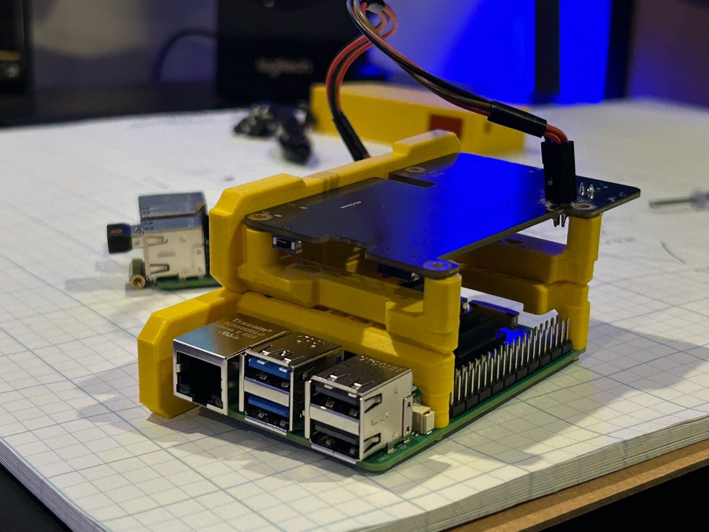
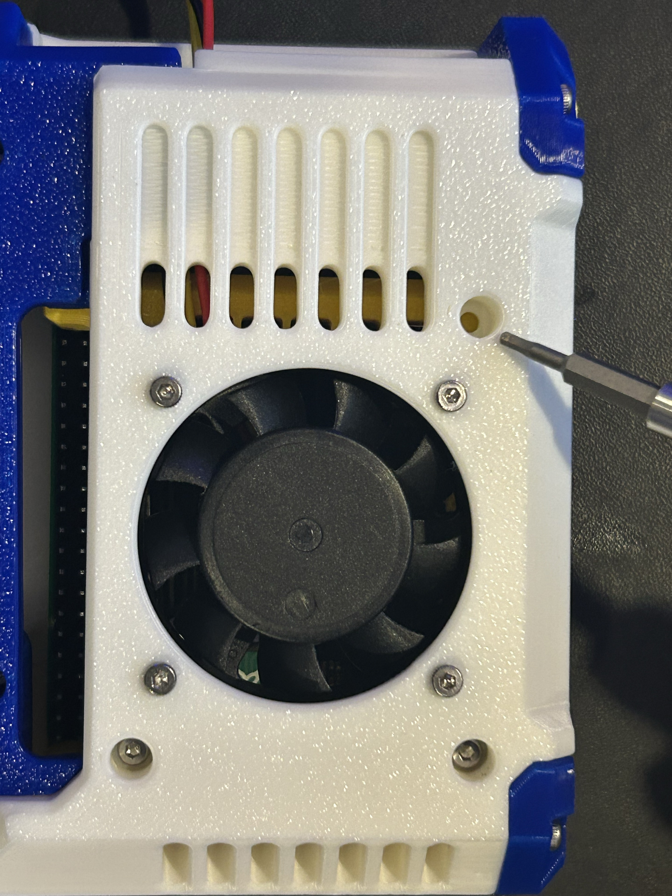
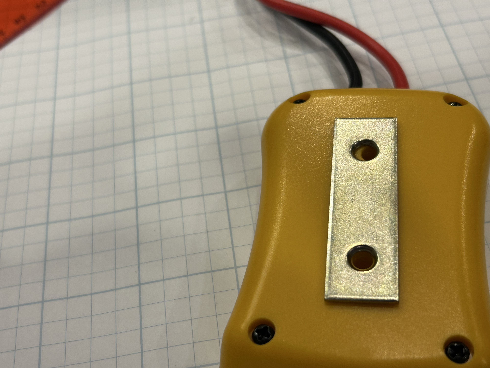
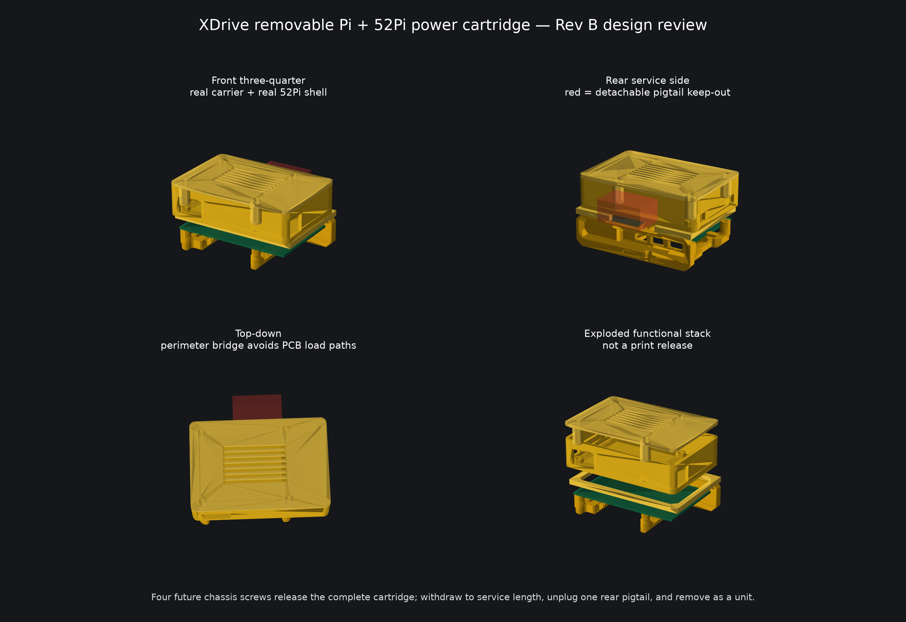

Voice and audio
A dedicated microphone supports speech capture and speech-to-text operation. A 40 mm-class speaker is being packaged for clear output in loud working environments.
MXGenius apparatus · November 9, 2026
The architecture and major material decisions are set. The build has moved into final chassis integration: fitting the complete shell in PLA, printing and testing the gasket system, setting the front array, and preparing the aluminum chassis for milling and integrated testing.

XDrive is a cordless-tool-battery-powered field appliance that combines a microphone-driven speech-to-text and AI interface with controlled, Linux-based file handling for data received directly from source equipment.
It is being built as one portable tool for loud, active environments: capture spoken input, provide local status and controls, and receive, store, and move sensitive files through clearly separated network and equipment connections. The Linux appliance layer provides the foundation for access control, encryption, and predictable file handling without asking the operator to manage a general-purpose computer in the field.
| Area | Material direction | Role in the assembly |
|---|---|---|
| Structural chassis | Milled aluminum | Carries the mounting points, compute cartridge, handle loads, and the main assembly geometry. |
| Outer shell | Printed PLA | Forms the fitted enclosure around the chassis and provides the replaceable exterior surfaces. |
| Gaskets and grip | Flexible printed elastomer filament | Provides fitted interfaces, local compliance, sealing surfaces, and a continuous grip treatment. The exact filament designation will follow the material test. |
| Hard bumper | Exposed aluminum chassis lip | Leaves a controlled metal edge outside the PLA shell to take direct contact before the printed body. |
| Outer closure | Six-fastener target | Keeps the shell restrained with a small, serviceable hardware set while the final fit pass confirms placement. |
A dedicated microphone supports speech capture and speech-to-text operation. A 40 mm-class speaker is being packaged for clear output in loud working environments.
A 40 mm fan has a defined position above the compute package, coordinating airflow, port clearance, and cartridge service access.
A compact screen provides local status. The button array is concealed beneath a continuous printed membrane, with the control legends formed directly into the surface for repeated pressing without exposed keycaps.
The Raspberry Pi 5 and 52Pi power module withdraw as a compute cartridge. The boards remain serviceable and do not carry the chassis, handle, or battery loads.



Earlier records: October 23 enclosure and viewer baseline, October 16 battery and structural study, and October 7 early build archive.